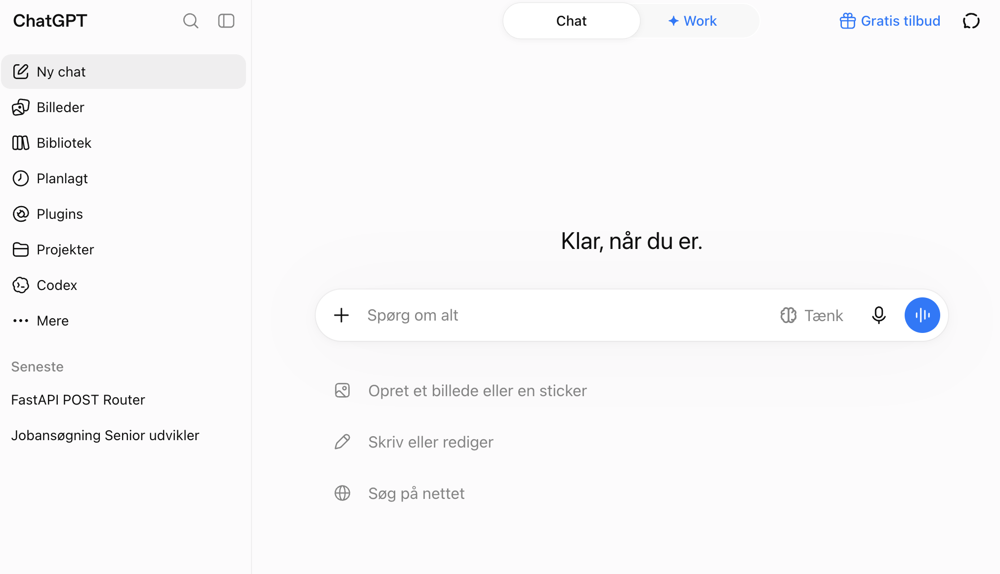
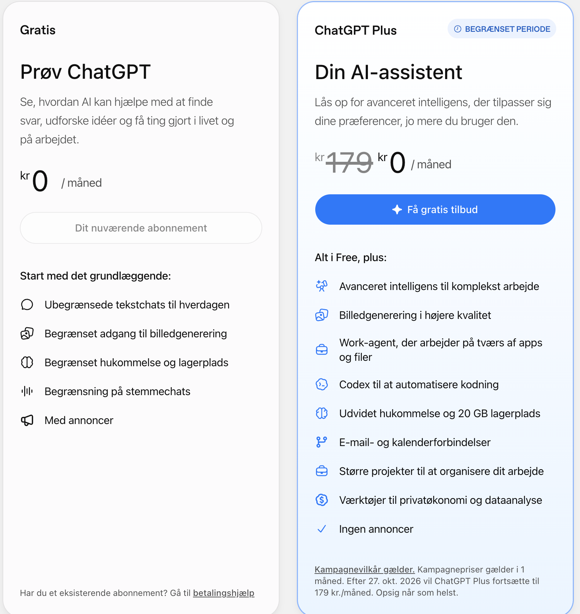
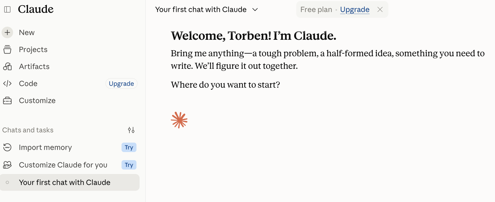
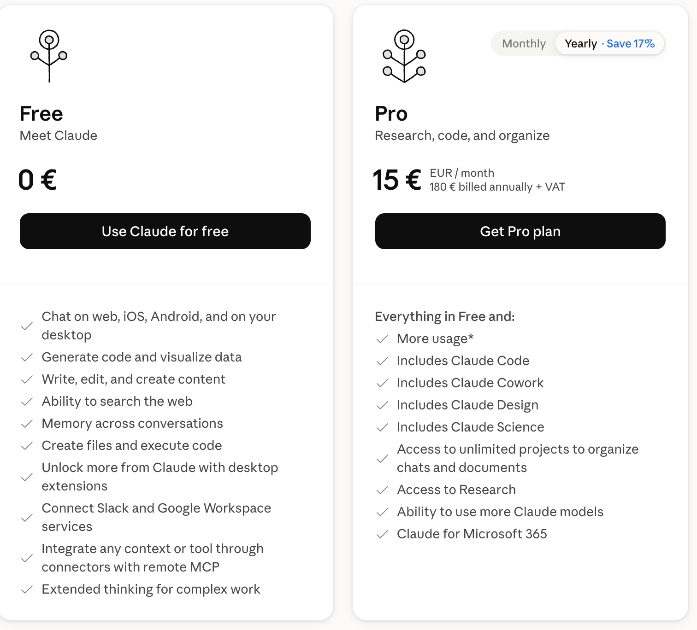
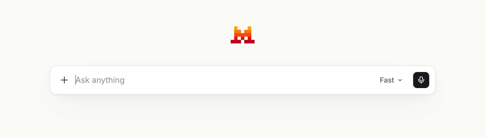
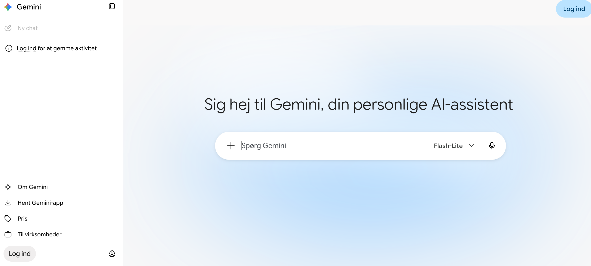
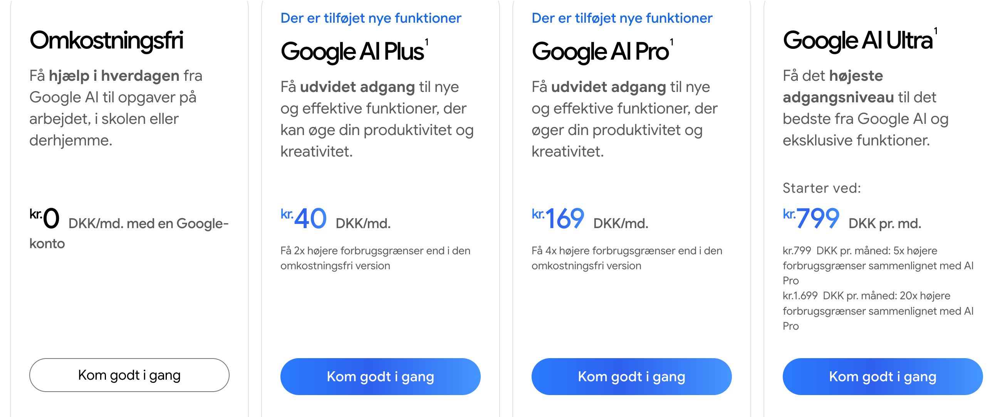

| Europæisk | Amerikansk | Metrisk præfiks | Tal |
|---|---|---|---|
| Million | Million | Mega | 10^6 = 1.000.000 |
| Milliard | Billion | Giga | 10^9 = 1.000.000.000 |
| Billion | Trillion | Tera | 10^12 = 1.000.000.000.000 |
| Billiard | Quadrillion | Peta | 10^15 = 1.000.000.000.000.000 |
| Task | Default pick | Budget or alternate pick | Why |
|---|---|---|---|
| Hard coding / refactors | Claude Fable 5.1 or Opus 5.5 | GPT-6 Astra (if enabled) | Fable 5.1 is generally available and Opus 5.5 costs less; Astra is priced for the hardest work and may need an admin to enable it. |
| Daily coding assistant | Claude Sonnet 5 or GPT-6 Sol | Grok 4.6 | Sonnet and Sol cover everyday work, and OpenAI built Sol for coding and agentic work; Grok is useful when current web or X context matters. |
| Writing and editing | GPT-6 Sol in ChatGPT Work or the API | Claude Sonnet 5 | Use ChatGPT for a broad tool surface; use Claude when tight constraints matter. |
| Research over long documents | Gemini 3.8 Flash | Qwen3.8-Max | Both list 1M-token input limits; choose based on where your data and deployment already live. |
| Data analysis | ChatGPT, with GPT-6 Sol on paid plans | Gemini 3.8 Flash | ChatGPT has mature data tools; Gemini fits Google-connected work and multimodal inputs. |
| High-volume summaries and extraction | GPT-6 Luna | DeepSeek V4 Flash or GLM-5.3-Flash | OpenAI built Luna for focused, high-volume tasks at $0.10 / $0.50 per 1M tokens; compare cache and peak-hour rules before you switch. |
| Image generation | GPT Image / ChatGPT or Midjourney | Nano Banana Pro or Nano Banana 2 Lite | Use ChatGPT for convenience, Midjourney for style, and Google's Nano Banana models for Google workflows and text-heavy visuals. |
| Video generation | Gemini Omni Flash | Veo 3.1 or Runway | Omni Flash is now Google's default with conversational editing; Veo 3.1 handles scene extension and last-frame control. |
| Automation / agent swarms | Kimi K3 | n8n + GLM-5.3-Flash | Kimi offers a Swarm mode; GLM-5.3-Flash is a low-cost option for DIY pipelines at its standard rate. |






